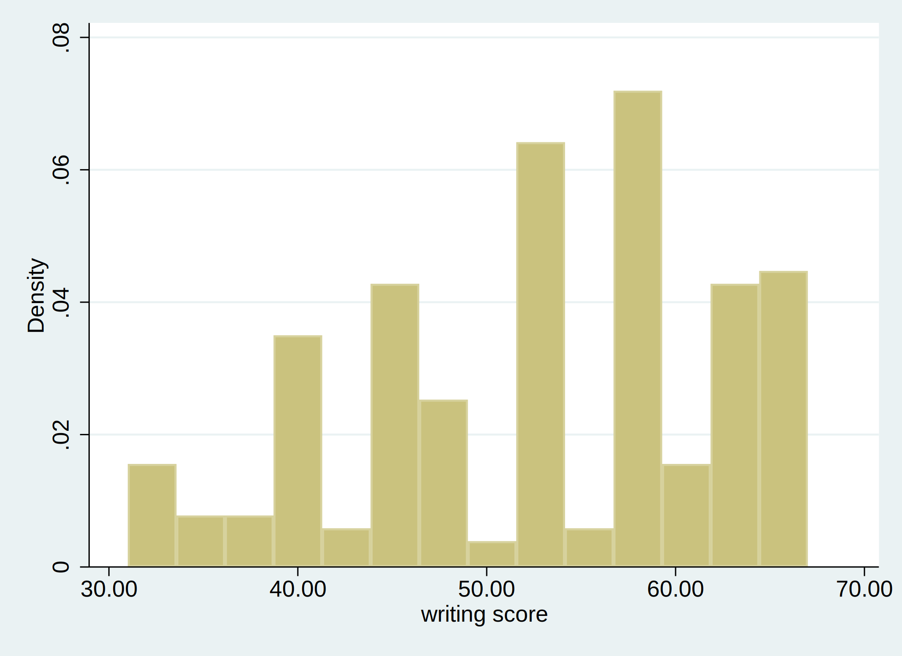
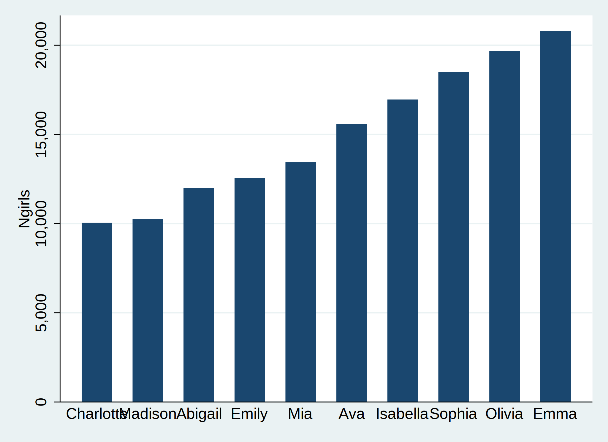
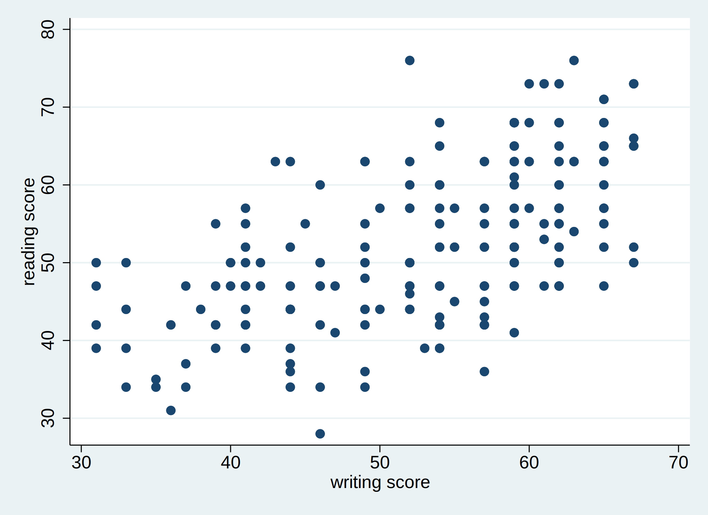
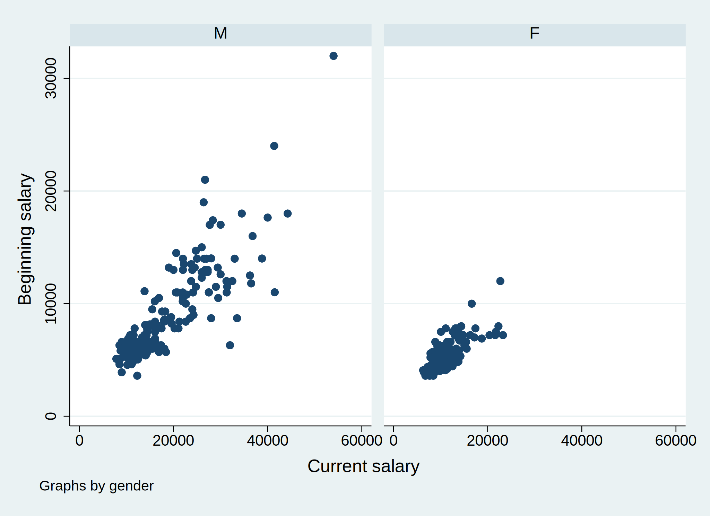
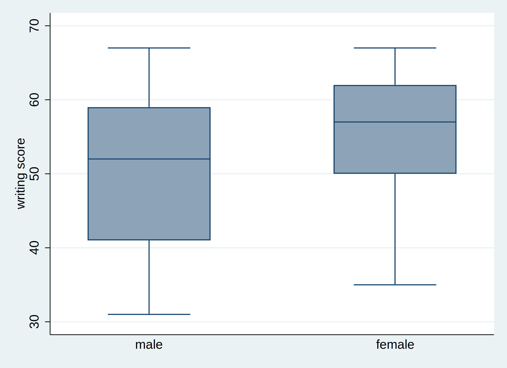

. di 1 + 2 + 3 // one plus two plus three
6
.
. di 1 + 2 * 3 // one plus two times three
7
.
. di (1 + 2) * 3 // first one plus two, then times three
9
.
. input x
x
1. 0
2. 1
3. 2
4. 3
5. 5
6. 8
7. end
.
. clear
.
. set obs 11
number of observations (_N) was 0, now 11
.
. egen myvar = seq(), from(1) to(11)
.
. gen plus3 = myvar + 3
.
. summarize
Variable | Obs Mean Std. Dev. Min Max
-------------+---------------------------------------------------------
myvar | 11 6 3.316625 1 11
plus3 | 11 9 3.316625 4 14
.
. label variable myvar "sequence from 1 to 11"
.
. label variable plus3 "myvar with 3 added"
.
. clear
.
. cd "c:/chuck/NYU/Silver/Practicum/"
c:\chuck\NYU\Silver\Practicum
. help mean
. use "https://clelandcm.github.io/Silver-Practicum/nhanes.dta", clear
(Written by R. )
. import delimited "https://clelandcm.github.io/Silver-Practicum/table1.txt", clear
(5 vars, 3 obs)
. import spss using "https://clelandcm.github.io/Silver-Practicum/hsb2.sav", clear
(11 vars, 200 obs)
. import excel using "https://clelandcm.github.io/Silver-Practicum/Female-Names.xlsx", firstrow clear
(3 vars, 10 obs)
. export delimited using "outcsv.csv", replace
(note: file outcsv.csv not found)
file outcsv.csv saved
. export excel using "outxlsx.xlsx", firstrow(variables) replace // goes into working directory
file outxlsx.xlsx saved
. save "C:\chuck\NYU\Silver\Practicum\table1.dta", replace // explicit directory
file C:\chuck\NYU\Silver\Practicum\table1.dta saved
. clear
.
. input parent faminc hschool
parent faminc hschool
1. 0 1 1
2. 0 2 2
3. 0 3 1
4. 1 1 2
5. 1 2 1
6. 1 3 2
7. end
.
. describe
Contains data
obs: 6
vars: 3
-------------------------------------------------------------------------------------------------------------------
storage display value
variable name type format label variable label
-------------------------------------------------------------------------------------------------------------------
parent float %9.0g
faminc float %9.0g
hschool float %9.0g
-------------------------------------------------------------------------------------------------------------------
Sorted by:
Note: Dataset has changed since last saved.
.
. codebook
-------------------------------------------------------------------------------------------------------------------
parent (unlabeled)
-------------------------------------------------------------------------------------------------------------------
type: numeric (float)
range: [0,1] units: 1
unique values: 2 missing .: 0/6
tabulation: Freq. Value
3 0
3 1
-------------------------------------------------------------------------------------------------------------------
faminc (unlabeled)
-------------------------------------------------------------------------------------------------------------------
type: numeric (float)
range: [1,3] units: 1
unique values: 3 missing .: 0/6
tabulation: Freq. Value
2 1
2 2
2 3
-------------------------------------------------------------------------------------------------------------------
hschool (unlabeled)
-------------------------------------------------------------------------------------------------------------------
type: numeric (float)
range: [1,2] units: 1
unique values: 2 missing .: 0/6
tabulation: Freq. Value
3 1
3 2
.
. tabulate parent
parent | Freq. Percent Cum.
------------+-----------------------------------
0 | 3 50.00 50.00
1 | 3 50.00 100.00
------------+-----------------------------------
Total | 6 100.00
.
. label variable parent "Mother or Father?"
.
. label variable faminc "Family Income Category"
.
. label variable hschool "High School of GED Completed?"
.
. label define Mom_Dad_Label 0 "Mom" 1 "Dad"
.
. label define faminc_Label 1 "<20k per year" 2 "20-50k per year" 3 ">50k per year"
.
. label define Educ_Label 1 "No" 2 "Yes"
.
. label values parent Mom_Dad_Label
.
. label values faminc faminc_Label
.
. label values hschool Educ_Label
.
. describe
Contains data
obs: 6
vars: 3
-------------------------------------------------------------------------------------------------------------------
storage display value
variable name type format label variable label
-------------------------------------------------------------------------------------------------------------------
parent float %9.0g Mom_Dad_Label
Mother or Father?
faminc float %15.0g faminc_Label
Family Income Category
hschool float %9.0g Educ_Label
High School of GED Completed?
-------------------------------------------------------------------------------------------------------------------
Sorted by:
Note: Dataset has changed since last saved.
.
. codebook
-------------------------------------------------------------------------------------------------------------------
parent Mother or Father?
-------------------------------------------------------------------------------------------------------------------
type: numeric (float)
label: Mom_Dad_Label
range: [0,1] units: 1
unique values: 2 missing .: 0/6
tabulation: Freq. Numeric Label
3 0 Mom
3 1 Dad
-------------------------------------------------------------------------------------------------------------------
faminc Family Income Category
-------------------------------------------------------------------------------------------------------------------
type: numeric (float)
label: faminc_Label
range: [1,3] units: 1
unique values: 3 missing .: 0/6
tabulation: Freq. Numeric Label
2 1 <20k per year
2 2 20-50k per year
2 3 >50k per year
-------------------------------------------------------------------------------------------------------------------
hschool High School of GED Completed?
-------------------------------------------------------------------------------------------------------------------
type: numeric (float)
label: Educ_Label
range: [1,2] units: 1
unique values: 2 missing .: 0/6
tabulation: Freq. Numeric Label
3 1 No
3 2 Yes
.
. tabulate parent
Mother or |
Father? | Freq. Percent Cum.
------------+-----------------------------------
Mom | 3 50.00 50.00
Dad | 3 50.00 100.00
------------+-----------------------------------
Total | 6 100.00
. clear
.
. input happy sad
happy sad
1. 4 1
2. 2 2
3. 1 5
4. 4 3
5. 4 3
6. 4 2
7. 1 4
8. 2 1
9. 5 1
10. 4 5
11. end
.
. recode sad (1=5) (2=4) (3=3) (4=2) (5=1), generate(sad_rev)
(8 differences between sad and sad_rev)
.
. list
+-----------------------+
| happy sad sad_rev |
|-----------------------|
1. | 4 1 5 |
2. | 2 2 4 |
3. | 1 5 1 |
4. | 4 3 3 |
5. | 4 3 3 |
|-----------------------|
6. | 4 2 4 |
7. | 1 4 2 |
8. | 2 1 5 |
9. | 5 1 5 |
10. | 4 5 1 |
+-----------------------+
. input famid str4 name inc
famid name inc
1. 2 "Art" 22000
2. 1 "Bill" 30000
3. 3 "Paul" 25000
4. end
.
. save dads, replace // goes into working directory with .dta extension
file dads.dta saved
.
. list
+----------------------------------------------+
| happy sad sad_rev famid name inc |
|----------------------------------------------|
1. | 4 1 5 2 Art 22000 |
2. | 2 2 4 1 Bill 30000 |
3. | 1 5 1 3 Paul 25000 |
4. | 4 3 3 . . |
5. | 4 3 3 . . |
|----------------------------------------------|
6. | 4 2 4 . . |
7. | 1 4 2 . . |
8. | 2 1 5 . . |
9. | 5 1 5 . . |
10. | 4 5 1 . . |
+----------------------------------------------+
.
. clear
.
. input famid str4 name inc
famid name inc
1. 1 "Bess" 15000
2. 3 "Pat" 50000
3. 2 "Amy" 18000
4. end
.
. save moms, replace // goes into working directory with .dta extension
file moms.dta saved
.
. list
+----------------------+
| famid name inc |
|----------------------|
1. | 1 Bess 15000 |
2. | 3 Pat 50000 |
3. | 2 Amy 18000 |
+----------------------+
.
. use dads, clear
.
. append using moms
.
. list
+----------------------------------------------+
| happy sad sad_rev famid name inc |
|----------------------------------------------|
1. | 4 1 5 2 Art 22000 |
2. | 2 2 4 1 Bill 30000 |
3. | 1 5 1 3 Paul 25000 |
4. | 4 3 3 . . |
5. | 4 3 3 . . |
|----------------------------------------------|
6. | 4 2 4 . . |
7. | 1 4 2 . . |
8. | 2 1 5 . . |
9. | 5 1 5 . . |
10. | 4 5 1 . . |
|----------------------------------------------|
11. | . . . 1 Bess 15000 |
12. | . . . 3 Pat 50000 |
13. | . . . 2 Amy 18000 |
+----------------------------------------------+
. webuse autosize, clear
(1978 Automobile Data)
. list
+------------------------------------+
| make weight length |
|------------------------------------|
1. | Toyota Celica 2,410 174 |
2. | BMW 320i 2,650 177 |
3. | Cad. Seville 4,290 204 |
4. | Pont. Grand Prix 3,210 201 |
5. | Datsun 210 2,020 165 |
|------------------------------------|
6. | Plym. Arrow 3,260 170 |
+------------------------------------+
.
. webuse autoexpense
(1978 Automobile Data)
. list
+---------------------------------+
| make price mpg |
|---------------------------------|
1. | Toyota Celica 5,899 18 |
2. | BMW 320i 9,735 25 |
3. | Cad. Seville 15,906 21 |
4. | Pont. Grand Prix 5,222 19 |
5. | Datsun 210 4,589 35 |
+---------------------------------+
.
. webuse autosize
(1978 Automobile Data)
. merge 1:1 make using "http://www.stata-press.com/data/r15/autoexpense"
Result # of obs.
-----------------------------------------
not matched 1
from master 1 (_merge==1)
from using 0 (_merge==2)
matched 5 (_merge==3)
-----------------------------------------
. list
+---------------------------------------------------------------------+
| make weight length price mpg _merge |
|---------------------------------------------------------------------|
1. | BMW 320i 2,650 177 9,735 25 matched (3) |
2. | Cad. Seville 4,290 204 15,906 21 matched (3) |
3. | Datsun 210 2,020 165 4,589 35 matched (3) |
4. | Plym. Arrow 3,260 170 . . master only (1) |
5. | Pont. Grand Prix 3,210 201 5,222 19 matched (3) |
|---------------------------------------------------------------------|
6. | Toyota Celica 2,410 174 5,899 18 matched (3) |
+---------------------------------------------------------------------+
. webuse dollars, clear
(Regional Sales & Costs)
. list
+-----------------------------+
| region sales cost |
|-----------------------------|
1. | N Cntrl 419,472 227,677 |
2. | NE 360,523 138,097 |
3. | South 532,399 330,499 |
4. | West 310,565 165,348 |
+-----------------------------+
.
. webuse sforce
(Sales Force)
. list
+--------------------+
| region name |
|--------------------|
1. | N Cntrl Krantz |
2. | N Cntrl Phipps |
3. | N Cntrl Willis |
4. | NE Ecklund |
5. | NE Franks |
|--------------------|
6. | South Anderson |
7. | South Dubnoff |
8. | South Lee |
9. | South McNeil |
10. | West Charles |
|--------------------|
11. | West Cobb |
12. | West Grant |
+--------------------+
.
. merge m:1 region using "http://www.stata-press.com/data/r15/dollars"
(label region already defined)
Result # of obs.
-----------------------------------------
not matched 0
matched 12 (_merge==3)
-----------------------------------------
. list
+------------------------------------------------------+
| region name sales cost _merge |
|------------------------------------------------------|
1. | N Cntrl Krantz 419,472 227,677 matched (3) |
2. | N Cntrl Phipps 419,472 227,677 matched (3) |
3. | N Cntrl Willis 419,472 227,677 matched (3) |
4. | NE Ecklund 360,523 138,097 matched (3) |
5. | NE Franks 360,523 138,097 matched (3) |
|------------------------------------------------------|
6. | South Anderson 532,399 330,499 matched (3) |
7. | South Dubnoff 532,399 330,499 matched (3) |
8. | South Lee 532,399 330,499 matched (3) |
9. | South McNeil 532,399 330,499 matched (3) |
10. | West Charles 310,565 165,348 matched (3) |
|------------------------------------------------------|
11. | West Cobb 310,565 165,348 matched (3) |
12. | West Grant 310,565 165,348 matched (3) |
+------------------------------------------------------+
. use "https://clelandcm.github.io/Silver-Practicum/bank.dta", clear
.
. codebook sex // Females are sex=1
-------------------------------------------------------------------------------------------------------------------
sex Sex of employee
-------------------------------------------------------------------------------------------------------------------
type: numeric (double)
label: sex
range: [0,1] units: 1
unique values: 2 missing .: 0/474
tabulation: Freq. Numeric Label
258 0 Males
216 1 Females
.
. keep if sex == 1
(258 observations deleted)
.
. describe
Contains data from https://clelandcm.github.io/Silver-Practicum/bank.dta
obs: 216
vars: 19 06 FEB 2020 11:34
-------------------------------------------------------------------------------------------------------------------
storage display value
variable name type format label variable label
-------------------------------------------------------------------------------------------------------------------
id double %12.0g Employee code
salbeg double %12.0g Beginning salary
sex double %12.0g sex Sex of employee
time double %12.0g Job seniority
age double %12.0g Age of employee
salnow double %12.0g Current salary
edlevel double %12.0g Educational level
work double %12.0g Work experience
jobcat double %12.0g jobcat Employment category
minority double %12.0g minority Minority classification
sexrace double %12.0g sexrace Sex & race classification
egender double %12.0g
eminorit double %12.0g
egenxmin double %12.0g
bsalcent double %12.0g
csaladj double %12.0g
saldelta double %12.0g
res_1 double %12.0g Unstandardized Residual
gender double %12.0g gender
-------------------------------------------------------------------------------------------------------------------
Sorted by:
Note: Dataset has changed since last saved.
. use "https://clelandcm.github.io/Silver-Practicum/bank.dta", clear
.
. describe
Contains data from https://clelandcm.github.io/Silver-Practicum/bank.dta
obs: 474
vars: 19 06 FEB 2020 11:34
-------------------------------------------------------------------------------------------------------------------
storage display value
variable name type format label variable label
-------------------------------------------------------------------------------------------------------------------
id double %12.0g Employee code
salbeg double %12.0g Beginning salary
sex double %12.0g sex Sex of employee
time double %12.0g Job seniority
age double %12.0g Age of employee
salnow double %12.0g Current salary
edlevel double %12.0g Educational level
work double %12.0g Work experience
jobcat double %12.0g jobcat Employment category
minority double %12.0g minority Minority classification
sexrace double %12.0g sexrace Sex & race classification
egender double %12.0g
eminorit double %12.0g
egenxmin double %12.0g
bsalcent double %12.0g
csaladj double %12.0g
saldelta double %12.0g
res_1 double %12.0g Unstandardized Residual
gender double %12.0g gender
-------------------------------------------------------------------------------------------------------------------
Sorted by:
.
. keep id sex age sal*
.
. describe
Contains data from https://clelandcm.github.io/Silver-Practicum/bank.dta
obs: 474
vars: 6 06 FEB 2020 11:34
-------------------------------------------------------------------------------------------------------------------
storage display value
variable name type format label variable label
-------------------------------------------------------------------------------------------------------------------
id double %12.0g Employee code
salbeg double %12.0g Beginning salary
sex double %12.0g sex Sex of employee
age double %12.0g Age of employee
salnow double %12.0g Current salary
saldelta double %12.0g
-------------------------------------------------------------------------------------------------------------------
Sorted by:
Note: Dataset has changed since last saved.
. use "https://stats.idre.ucla.edu/stat/stata/modules/faminc", clear
.
. list
+----------------------------------------+
| famid faminc96 faminc97 faminc98 |
|----------------------------------------|
1. | 3 75000 76000 77000 |
2. | 1 40000 40500 41000 |
3. | 2 45000 45400 45800 |
+----------------------------------------+
.
. reshape long faminc, i(famid) j(year)
(note: j = 96 97 98)
Data wide -> long
-----------------------------------------------------------------------------
Number of obs. 3 -> 9
Number of variables 4 -> 3
j variable (3 values) -> year
xij variables:
faminc96 faminc97 faminc98 -> faminc
-----------------------------------------------------------------------------
.
. list
+-----------------------+
| famid year faminc |
|-----------------------|
1. | 1 96 40000 |
2. | 1 97 40500 |
3. | 1 98 41000 |
4. | 2 96 45000 |
5. | 2 97 45400 |
|-----------------------|
6. | 2 98 45800 |
7. | 3 96 75000 |
8. | 3 97 76000 |
9. | 3 98 77000 |
+-----------------------+
See https://stats.idre.ucla.edu/stata/modules/reshaping-data-wide-to-long/ for additional examples
. import excel using "https://clelandcm.github.io/Silver-Practicum/Scores-Long.xlsx", firstrow clear
(3 vars, 9 obs)
.
. list
+-------------------+
| ID Time Score |
|-------------------|
1. | 1 1 4 |
2. | 1 2 1 |
3. | 1 3 1 |
4. | 2 1 2 |
5. | 2 2 2 |
|-------------------|
6. | 2 3 5 |
7. | 3 1 5 |
8. | 3 2 5 |
9. | 3 3 3 |
+-------------------+
.
. reshape wide Score, i(ID) j(Time)
(note: j = 1 2 3)
Data long -> wide
-----------------------------------------------------------------------------
Number of obs. 9 -> 3
Number of variables 3 -> 4
j variable (3 values) Time -> (dropped)
xij variables:
Score -> Score1 Score2 Score3
-----------------------------------------------------------------------------
.
. list
+-------------------------------+
| ID Score1 Score2 Score3 |
|-------------------------------|
1. | 1 4 1 1 |
2. | 2 2 2 5 |
3. | 3 5 5 3 |
+-------------------------------+
.
. clear
.
. input ID WEIGHT CALORIES TIME
ID WEIGHT CALORIES TIME
1. 1 200 3500 1
2. 1 190 3300 2
3. 1 180 3100 3
4. 2 160 3000 1
5. 2 150 2900 2
6. 2 140 2800 3
7. end
.
. list
+-------------------------------+
| ID WEIGHT CALORIES TIME |
|-------------------------------|
1. | 1 200 3500 1 |
2. | 1 190 3300 2 |
3. | 1 180 3100 3 |
4. | 2 160 3000 1 |
5. | 2 150 2900 2 |
|-------------------------------|
6. | 2 140 2800 3 |
+-------------------------------+
.
. reshape wide WEIGHT CALORIES, i(ID) j(TIME)
(note: j = 1 2 3)
Data long -> wide
-----------------------------------------------------------------------------
Number of obs. 6 -> 2
Number of variables 4 -> 7
j variable (3 values) TIME -> (dropped)
xij variables:
WEIGHT -> WEIGHT1 WEIGHT2 WEIGHT3
CALORIES -> CALORIES1 CALORIES2 CALORIES3
-----------------------------------------------------------------------------
.
. list
+-------------------------------------------------------------------+
| ID WEIGHT1 CALORI~1 WEIGHT2 CALORI~2 WEIGHT3 CALORI~3 |
|-------------------------------------------------------------------|
1. | 1 200 3500 190 3300 180 3100 |
2. | 2 160 3000 150 2900 140 2800 |
+-------------------------------------------------------------------+
. use "https://clelandcm.github.io/Silver-Practicum/hsb2.dta", clear
(highschool and beyond (200 cases))
.
. generate total = read + write + math + science + socst
.
. summarize
Variable | Obs Mean Std. Dev. Min Max
-------------+---------------------------------------------------------
id | 200 100.5 57.87918 1 200
female | 200 .545 .4992205 0 1
race | 200 3.43 1.039472 1 4
ses | 200 2.055 .7242914 1 3
schtyp | 200 1.16 .367526 1 2
-------------+---------------------------------------------------------
prog | 200 2.025 .6904772 1 3
read | 200 52.23 10.25294 28 76
write | 200 52.775 9.478586 31 67
math | 200 52.645 9.368448 33 75
science | 200 51.85 9.900891 26 74
-------------+---------------------------------------------------------
socst | 200 52.405 10.73579 26 71
total | 200 261.905 40.85611 165 343
. import excel using "https://clelandcm.github.io/Silver-Practicum/Scores-Long.xlsx", firstrow clear
(3 vars, 9 obs)
.
. list
+-------------------+
| ID Time Score |
|-------------------|
1. | 1 1 4 |
2. | 1 2 1 |
3. | 1 3 1 |
4. | 2 1 2 |
5. | 2 2 2 |
|-------------------|
6. | 2 3 5 |
7. | 3 1 5 |
8. | 3 2 5 |
9. | 3 3 3 |
+-------------------+
.
. gsort Score
.
. list
+-------------------+
| ID Time Score |
|-------------------|
1. | 1 3 1 |
2. | 1 2 1 |
3. | 2 2 2 |
4. | 2 1 2 |
5. | 3 3 3 |
|-------------------|
6. | 1 1 4 |
7. | 3 2 5 |
8. | 3 1 5 |
9. | 2 3 5 |
+-------------------+
.
. clear
. input ID WEIGHT CALORIES TIME
ID WEIGHT CALORIES TIME
1. 1 200 3500 1
2. 1 190 3300 2
3. 1 180 3100 3
4. 2 160 3000 1
5. 2 150 2900 2
6. 2 140 2800 3
7. end
.
. list
+-------------------------------+
| ID WEIGHT CALORIES TIME |
|-------------------------------|
1. | 1 200 3500 1 |
2. | 1 190 3300 2 |
3. | 1 180 3100 3 |
4. | 2 160 3000 1 |
5. | 2 150 2900 2 |
|-------------------------------|
6. | 2 140 2800 3 |
+-------------------------------+
.
. gsort -WEIGHT -CALORIES
.
. list
+-------------------------------+
| ID WEIGHT CALORIES TIME |
|-------------------------------|
1. | 1 200 3500 1 |
2. | 1 190 3300 2 |
3. | 1 180 3100 3 |
4. | 2 160 3000 1 |
5. | 2 150 2900 2 |
|-------------------------------|
6. | 2 140 2800 3 |
+-------------------------------+
. webuse auto, clear
(1978 Automobile Data)
.
. describe
Contains data from https://www.stata-press.com/data/r16/auto.dta
obs: 74 1978 Automobile Data
vars: 12 13 Apr 2018 17:45
(_dta has notes)
-------------------------------------------------------------------------------------------------------------------
storage display value
variable name type format label variable label
-------------------------------------------------------------------------------------------------------------------
make str18 %-18s Make and Model
price int %8.0gc Price
mpg int %8.0g Mileage (mpg)
rep78 int %8.0g Repair Record 1978
headroom float %6.1f Headroom (in.)
trunk int %8.0g Trunk space (cu. ft.)
weight int %8.0gc Weight (lbs.)
length int %8.0g Length (in.)
turn int %8.0g Turn Circle (ft.)
displacement int %8.0g Displacement (cu. in.)
gear_ratio float %6.2f Gear Ratio
foreign byte %8.0g origin Car type
-------------------------------------------------------------------------------------------------------------------
Sorted by: foreign
.
. import spss using "https://clelandcm.github.io/Silver-Practicum/hsb2.sav", clear
(11 vars, 200 obs)
.
. histogram WRITE
(bin=14, start=31, width=2.5714286)
<img src="graph1.svg" height="400" alt="histogram" >

. import excel using "https://clelandcm.github.io/Silver-Practicum/Female-Names.xlsx", firstrow clear
(3 vars, 10 obs)
.
. graph bar (asis) Ngirls, over(Name, sort(Ngirls))
<img src="graph2.svg" height="400" width="800" alt="bar" >

. use "https://clelandcm.github.io/Silver-Practicum/hsb2.dta", clear
(highschool and beyond (200 cases))
.
. twoway (scatter read write)
<img src="graph3.svg" height="400" alt="scatter" >

. use "https://clelandcm.github.io/Silver-Practicum/bank.dta", clear
.
. twoway scatter salbeg salnow, by(gender)
<img src="graph4.svg" height="400" alt="Enhanced" >

. use "https://clelandcm.github.io/Silver-Practicum/hsb2.dta", clear
(highschool and beyond (200 cases))
.
. graph box write, over(female)
<img src="graph5.svg" height="400" alt="box" >

. use "https://clelandcm.github.io/Silver-Practicum/hsb.dta", clear
(highschool and beyond (200 cases))
.
. summarize
Variable | Obs Mean Std. Dev. Min Max
-------------+---------------------------------------------------------
id | 200 100.5 57.87918 1 200
female | 200 .545 .4992205 0 1
race | 200 3.43 1.039472 1 4
ses | 200 2.055 .7242914 1 3
schtyp | 200 1.16 .367526 1 2
-------------+---------------------------------------------------------
prog | 200 2.025 .6904772 1 3
read | 200 52.23 10.25294 28 76
write | 200 52.775 9.478586 31 67
math | 200 52.645 9.368448 33 75
science | 200 51.85 9.900891 26 74
-------------+---------------------------------------------------------
socst | 200 52.405 10.73579 26 71
. use "https://clelandcm.github.io/Silver-Practicum/bank.dta", clear
.
. table jobcat
-----------------------------
Employment |
category | Freq.
-----------------+-----------
Clerical | 227
Office trainee | 136
Security officer | 27
College trainee | 41
Exempt employee | 32
MBA trainee | 5
Technical | 6
-----------------------------
.
. tabulate jobcat
Employment |
category | Freq. Percent Cum.
-----------------+-----------------------------------
Clerical | 227 47.89 47.89
Office trainee | 136 28.69 76.58
Security officer | 27 5.70 82.28
College trainee | 41 8.65 90.93
Exempt employee | 32 6.75 97.68
MBA trainee | 5 1.05 98.73
Technical | 6 1.27 100.00
-----------------+-----------------------------------
Total | 474 100.00
. use "https://clelandcm.github.io/Silver-Practicum/bank.dta", clear
.
. tab gender jobcat, row col
+-------------------+
| Key |
|-------------------|
| frequency |
| row percentage |
| column percentage |
+-------------------+
| Employment category
gender | Clerical Office tr Security College t Exempt em MBA train Technical | Total
-----------+-----------------------------------------------------------------------------+----------
M | 110 47 27 34 30 4 6 | 258
| 42.64 18.22 10.47 13.18 11.63 1.55 2.33 | 100.00
| 48.46 34.56 100.00 82.93 93.75 80.00 100.00 | 54.43
-----------+-----------------------------------------------------------------------------+----------
F | 117 89 0 7 2 1 0 | 216
| 54.17 41.20 0.00 3.24 0.93 0.46 0.00 | 100.00
| 51.54 65.44 0.00 17.07 6.25 20.00 0.00 | 45.57
-----------+-----------------------------------------------------------------------------+----------
Total | 227 136 27 41 32 5 6 | 474
| 47.89 28.69 5.70 8.65 6.75 1.05 1.27 | 100.00
| 100.00 100.00 100.00 100.00 100.00 100.00 100.00 | 100.00
. use "https://clelandcm.github.io/Silver-Practicum/hsb.dta", clear
(highschool and beyond (200 cases))
. ttest write == 50
One-sample t test
------------------------------------------------------------------------------
Variable | Obs Mean Std. Err. Std. Dev. [95% Conf. Interval]
---------+--------------------------------------------------------------------
write | 200 52.775 .6702372 9.478586 51.45332 54.09668
------------------------------------------------------------------------------
mean = mean(write) t = 4.1403
Ho: mean = 50 degrees of freedom = 199
Ha: mean < 50 Ha: mean != 50 Ha: mean > 50
Pr(T < t) = 1.0000 Pr(|T| > |t|) = 0.0001 Pr(T > t) = 0.0000
. ttest read == write
Paired t test
------------------------------------------------------------------------------
Variable | Obs Mean Std. Err. Std. Dev. [95% Conf. Interval]
---------+--------------------------------------------------------------------
read | 200 52.23 .7249921 10.25294 50.80035 53.65965
write | 200 52.775 .6702372 9.478586 51.45332 54.09668
---------+--------------------------------------------------------------------
diff | 200 -.545 .6283822 8.886666 -1.784142 .6941424
------------------------------------------------------------------------------
mean(diff) = mean(read - write) t = -0.8673
Ho: mean(diff) = 0 degrees of freedom = 199
Ha: mean(diff) < 0 Ha: mean(diff) != 0 Ha: mean(diff) > 0
Pr(T < t) = 0.1934 Pr(|T| > |t|) = 0.3868 Pr(T > t) = 0.8066
. ttest write, by(female)
Two-sample t test with equal variances
------------------------------------------------------------------------------
Group | Obs Mean Std. Err. Std. Dev. [95% Conf. Interval]
---------+--------------------------------------------------------------------
male | 91 50.12088 1.080274 10.30516 47.97473 52.26703
female | 109 54.99083 .7790686 8.133715 53.44658 56.53507
---------+--------------------------------------------------------------------
combined | 200 52.775 .6702372 9.478586 51.45332 54.09668
---------+--------------------------------------------------------------------
diff | -4.869947 1.304191 -7.441835 -2.298059
------------------------------------------------------------------------------
diff = mean(male) - mean(female) t = -3.7341
Ho: diff = 0 degrees of freedom = 198
Ha: diff < 0 Ha: diff != 0 Ha: diff > 0
Pr(T < t) = 0.0001 Pr(|T| > |t|) = 0.0002 Pr(T > t) = 0.9999
.
. ttest write, by(female) unequal welch
Two-sample t test with unequal variances
------------------------------------------------------------------------------
Group | Obs Mean Std. Err. Std. Dev. [95% Conf. Interval]
---------+--------------------------------------------------------------------
male | 91 50.12088 1.080274 10.30516 47.97473 52.26703
female | 109 54.99083 .7790686 8.133715 53.44658 56.53507
---------+--------------------------------------------------------------------
combined | 200 52.775 .6702372 9.478586 51.45332 54.09668
---------+--------------------------------------------------------------------
diff | -4.869947 1.331894 -7.498977 -2.240916
------------------------------------------------------------------------------
diff = mean(male) - mean(female) t = -3.6564
Ho: diff = 0 Welch's degrees of freedom = 171.363
Ha: diff < 0 Ha: diff != 0 Ha: diff > 0
Pr(T < t) = 0.0002 Pr(|T| > |t|) = 0.0003 Pr(T > t) = 0.9998
. use "https://clelandcm.github.io/Silver-Practicum/hsb2.dta", clear
(highschool and beyond (200 cases))
.
. pwcorr read write math science socst
| read write math science socst
-------------+---------------------------------------------
read | 1.0000
write | 0.5968 1.0000
math | 0.6623 0.6174 1.0000
science | 0.6302 0.5704 0.6307 1.0000
socst | 0.6215 0.6048 0.5445 0.4651 1.0000
.
. pwcorr read write math science socst, obs sig
| read write math science socst
-------------+---------------------------------------------
read | 1.0000
|
| 200
|
write | 0.5968 1.0000
| 0.0000
| 200 200
|
math | 0.6623 0.6174 1.0000
| 0.0000 0.0000
| 200 200 200
|
science | 0.6302 0.5704 0.6307 1.0000
| 0.0000 0.0000 0.0000
| 200 200 200 200
|
socst | 0.6215 0.6048 0.5445 0.4651 1.0000
| 0.0000 0.0000 0.0000 0.0000
| 200 200 200 200 200
|
. use "https://clelandcm.github.io/Silver-Practicum/hsb2.dta", clear
(highschool and beyond (200 cases))
.
. reg science math female socst read
Source | SS df MS Number of obs = 200
-------------+---------------------------------- F(4, 195) = 46.69
Model | 9543.72074 4 2385.93019 Prob > F = 0.0000
Residual | 9963.77926 195 51.0963039 R-squared = 0.4892
-------------+---------------------------------- Adj R-squared = 0.4788
Total | 19507.5 199 98.0276382 Root MSE = 7.1482
------------------------------------------------------------------------------
science | Coef. Std. Err. t P>|t| [95% Conf. Interval]
-------------+----------------------------------------------------------------
math | .3893102 .0741243 5.25 0.000 .243122 .5354983
female | -2.009765 1.022717 -1.97 0.051 -4.026772 .0072428
socst | .0498443 .062232 0.80 0.424 -.0728899 .1725784
read | .3352998 .0727788 4.61 0.000 .1917651 .4788345
_cons | 12.32529 3.193557 3.86 0.000 6.026942 18.62364
------------------------------------------------------------------------------
. use "https://clelandcm.github.io/Silver-Practicum/lowbwt.dta", clear
.
. label define Race_Label 1 "White" 2 "Black" 3 "Other"
.
. label values RACE Race_Label
.
. logit LOW AGE LWT i.RACE FTV
Iteration 0: log likelihood = -117.336
Iteration 1: log likelihood = -111.39737
Iteration 2: log likelihood = -111.2865
Iteration 3: log likelihood = -111.28645
Iteration 4: log likelihood = -111.28645
Logistic regression Number of obs = 189
LR chi2(5) = 12.10
Prob > chi2 = 0.0335
Log likelihood = -111.28645 Pseudo R2 = 0.0516
------------------------------------------------------------------------------
LOW | Coef. Std. Err. z P>|z| [95% Conf. Interval]
-------------+----------------------------------------------------------------
AGE | -.023823 .0337296 -0.71 0.480 -.0899318 .0422859
LWT | -.0142446 .0065407 -2.18 0.029 -.0270642 -.001425
|
RACE |
Black | 1.003898 .497859 2.02 0.044 .0281121 1.979684
Other | .4331084 .3622403 1.20 0.232 -.2768694 1.143086
|
FTV | -.0493083 .1672391 -0.29 0.768 -.3770909 .2784743
_cons | 1.295366 1.071443 1.21 0.227 -.8046244 3.395356
------------------------------------------------------------------------------
.
. logit LOW AGE LWT i.RACE FTV, or
Iteration 0: log likelihood = -117.336
Iteration 1: log likelihood = -111.39737
Iteration 2: log likelihood = -111.2865
Iteration 3: log likelihood = -111.28645
Iteration 4: log likelihood = -111.28645
Logistic regression Number of obs = 189
LR chi2(5) = 12.10
Prob > chi2 = 0.0335
Log likelihood = -111.28645 Pseudo R2 = 0.0516
------------------------------------------------------------------------------
LOW | Odds Ratio Std. Err. z P>|z| [95% Conf. Interval]
-------------+----------------------------------------------------------------
AGE | .9764586 .0329356 -0.71 0.480 .9139935 1.043193
LWT | .9858564 .0064482 -2.18 0.029 .9732988 .998576
|
RACE |
Black | 2.728898 1.358606 2.02 0.044 1.028511 7.240451
Other | 1.542043 .5585902 1.20 0.232 .7581535 3.136433
|
FTV | .9518876 .1591928 -0.29 0.768 .6858537 1.321113
_cons | 3.652332 3.913266 1.21 0.227 .4472559 29.82527
------------------------------------------------------------------------------
Note: _cons estimates baseline odds.